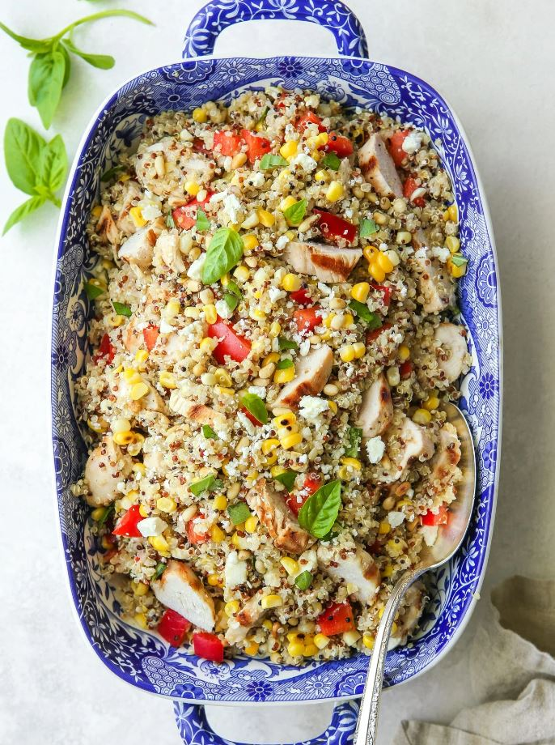
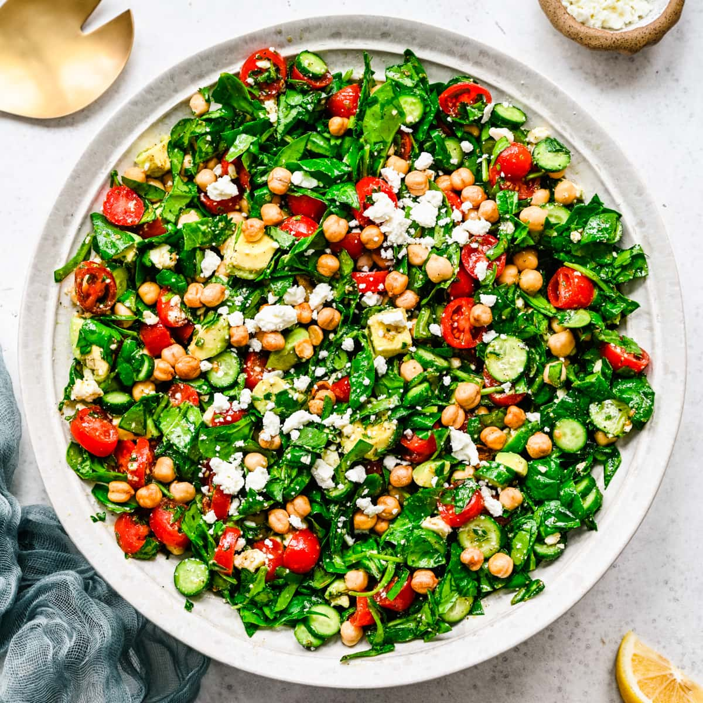
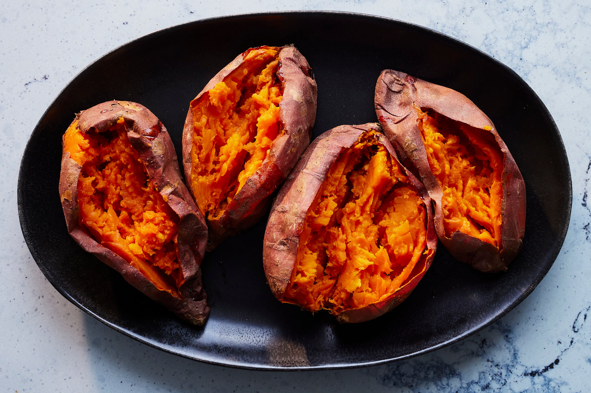
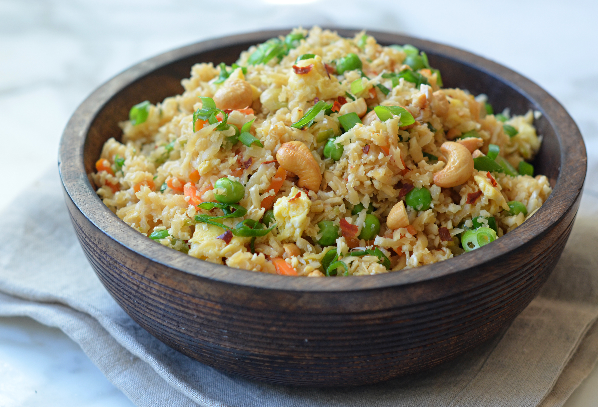

Avocado Toast

A simple and healthy breakfast option packed with nutrients.
- Ingredients: Avocado, Whole Grain Bread, Olive Oil, Salt, Pepper
- Instructions:
- Mash avocado in a bowl.
- Spread avocado mixture on toasted bread.
- Drizzle with olive oil and sprinkle with salt and pepper.
Quinoa Salad

Fresh and filling, perfect for a light lunch or side dish.
- Ingredients: Quinoa, Cherry Tomatoes, Cucumber, Feta Cheese, Olive Oil
- Instructions:
- Cook quinoa according to package instructions.
- Chop cherry tomatoes and cucumber.
- Mix cooked quinoa with veggies and feta cheese.
- Drizzle with olive oil and toss to combine.
Greek Yogurt Parfait

A delicious and nutritious breakfast or snack option, layered with fruits and nuts.
- Ingredients: Greek Yogurt, Granola, Mixed Berries, Honey, Nuts
- Instructions:
- In a glass, layer Greek yogurt, a handful of granola, and mixed berries.
- Drizzle honey over the top and sprinkle with chopped nuts.
- Repeat the layers until the glass is filled.
- Serve immediately or refrigerate for a refreshing snack later.
Spinach and Chickpea Salad

A nutrient-packed salad rich in protein and fiber, perfect for lunch.
- Ingredients: Spinach, Canned Chickpeas, Red Onion, Feta Cheese, Lemon Juice,
Olive Oil
- Instructions:
- Rinse and drain the canned chickpeas.
- In a large bowl, combine fresh spinach, chickpeas, and thinly sliced red onion.
- Add crumbled feta cheese on top.
- Drizzle with lemon juice and olive oil, then toss to combine.
Baked Sweet Potato

A simple and satisfying side dish packed with vitamins and fiber.
- Ingredients: Sweet Potatoes, Olive Oil, Salt, Pepper
- Instructions:
- Preheat the oven to 400°F (200°C).
- Wash and poke holes in the sweet potatoes with a fork.
- Rub with olive oil, salt, and pepper.
- Bake for 45-60 minutes or until tender. Serve warm.
Cauliflower Rice Stir-Fry

A low-carb alternative to traditional rice, packed with vegetables.
- Ingredients: Cauliflower, Mixed Vegetables (Carrots, Peas, Bell Peppers), Soy
Sauce, Garlic, Olive Oil
- Instructions:
- Grate the cauliflower to create rice-like pieces.
- Heat olive oil in a pan and add minced garlic.
- Add mixed vegetables and stir-fry until tender.
- Add cauliflower rice and soy sauce, cooking until cauliflower is tender.
Oatmeal with Bananas and Almonds

A warm and hearty breakfast that keeps you full and energized.
- Ingredients: Rolled Oats, Bananas, Almonds, Honey, Milk or Water
- Instructions:
- Cook rolled oats in milk or water according to package instructions.
- Slice bananas and add them to the cooked oats.
- Top with chopped almonds and drizzle with honey.
- Serve warm for a filling breakfast.
Grilled Chicken Salad

A protein-packed salad with grilled chicken, fresh greens, and a tangy dressing.
- Ingredients: Grilled Chicken Breast, Mixed Greens, Cherry Tomatoes, Cucumber,
Olive Oil, Balsamic Vinegar
- Instructions:
- Grill the chicken breast until fully cooked and slice it.
- In a bowl, combine mixed greens, halved cherry tomatoes, and sliced cucumber.
- Add the sliced grilled chicken on top.
- Drizzle with olive oil and balsamic vinegar, then toss gently to combine.
Berry Smoothie Bowl

A refreshing and nutrient-rich smoothie bowl topped with fruits and seeds.
- Ingredients: Frozen Mixed Berries, Banana, Greek Yogurt, Chia Seeds, Granola
- Instructions:
- In a blender, combine frozen mixed berries, banana, and Greek yogurt. Blend until
smooth.
- Pour the smoothie mixture into a bowl.
- Top with additional mixed berries, chia seeds, and granola.
- Enjoy immediately with a spoon.